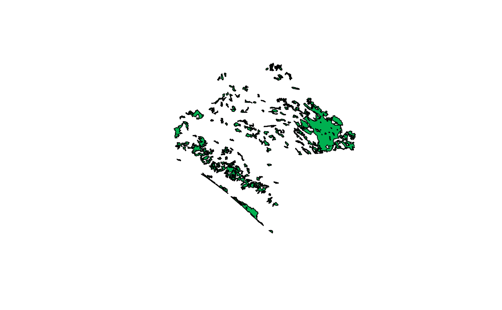

Fragmentation statistics
Source:vignettes/Fragmentation_statistics.Rmd
Fragmentation_statistics.RmdOverview
We explored the MK_Fragmentation() to estimate fragmentation statistics at the landscape and patch level.
Example database
We loaded the “vegetation_patches” database with 142 patches of old-growth vegetation from the state of Chiapas, Mexico. The shapefile has 142 rows (patches), the first column corresponds to the id of the patch.
data("vegetation_patches", package = "Makurhini") nrow(vegetation_patches) # Number of patches #> [1] 142 plot(st_geometry(vegetation_patches), col = "#00B050")

MK_Fragmentation()
To define the edge of the patches we will use a distance of 500 m from the limit of the patches (Haddad et al. 2015).
Fragmentation_test <- MK_Fragmentation(patches = vegetation_patches, edge_distance = 500, plot = F, min_patch_area = 100, landscape_area = NULL, area_unit = "km2", perimeter_unit = "km")
Exploring results
- The results are presented as a list, the first result is called “Summary landscape metrics (Viewer Panel)” and it has fragmentation statistics at landscape level.
names(Fragmentation_test) #> [1] "Summary landscape metrics (Viewer Panel)" #> [2] "Patch statistics shapefile" Fragmentation_test$`Summary landscape metrics (Viewer Panel)`
| Metric | Value |
|---|---|
| Patch area (km2) | 12792.2046 |
| Number of patches | 142.0000 |
| Size (mean) | 90.0859 |
| Patches < minimum patch area | 126.0000 |
| Patches < minimum patch area (%) | 30.8017 |
| Total edge | 12297.5330 |
| Edge density | 0.9613 |
| Total Core Area (km2) | 7622.3940 |
| Cority | 1.0000 |
| Shape Index (mean) | 138.4898 |
| FRAC (mean) | 1.4680 |
| MESH (km2) | 1543.1460 |
- The second output “Patch statistics shapefile” is a shapefile with patch level fragmentation statistics that can be saved using write_sf() from ‘sf’ package (https://cran.r-project.org/web/packages/sf/index.html).
head(Fragmentation_test[[2]]) #> Simple feature collection with 6 features and 9 fields #> Geometry type: POLYGON #> Dimension: XY #> Bounding box: xmin: 3542152 ymin: 498183.1 xmax: 3711426 ymax: 696540.5 #> CRS: +proj=lcc +lat_1=17.5 +lat_2=29.5 +lat_0=12 +lon_0=-102 +x_0=2500000 +y_0=0 +datum=WGS84 +units=m +no_defs #> id Area CA CAPercent Perimeter EdgePercent PARA ShapeIndex #> 1 1 4195.5691 3541.3806 84.4076 1412.046 15.5924 2.9713 8212.7666 #> 2 2 60.2227 11.9415 19.8289 167.982 80.1711 0.3585 117.0545 #> 3 3 48.8665 6.2099 12.7079 127.049 87.2921 0.3846 79.7484 #> 4 4 15.1875 7.4210 48.8626 18.536 51.1374 0.8194 6.4864 #> 5 5 33.2716 13.0877 39.3360 55.038 60.6640 0.6045 28.5066 #> 6 6 53.1344 11.3564 21.3730 111.123 78.6270 0.4782 72.7339 #> FRAC geometry #> 1 1.4065 POLYGON ((3676911 589967.3,... #> 2 1.8241 POLYGON ((3558044 696202.5,... #> 3 1.7785 POLYGON ((3569169 687776.4,... #> 4 1.1273 POLYGON ((3547317 685713.2,... #> 5 1.4961 POLYGON ((3567471 684357.4,... #> 6 1.6735 POLYGON ((3590569 672451.7,...
- To save the shapefile you can use the ‘write_sf()’ function from ‘sf’ package: write_sf(Fragmentacion_test[[2]], “…/folder/fragmentacion.shp”)
Viewing the results
We can visualize the static at the patch level using the default plot() function or other spatial information display packages like the ‘tmap’ package, for example:
- Core area (%):

- Edge (%)

- Perimeter-area ratio (PARA)

- Shape Index

- Fractal Dimension Index

Exploring other edge depths
We can make a loop where we explore different edge depths. In the following example, We will explore 10 edge depths (edge_distance argument): 100, 200, 300, 400, 500, 600, 700, 800, 900 and 1000 meters. We will apply the ‘MK_Fragmentation’ function using the previous distances and then, we will extract the core area percentage and edge percentage statistics. Finally, we will plot the average of the patch core area percentage and edge percentage (% core area + % edge = 100%).
#> Edge.distance Type Percentage
#> 1 100 Core Area 83.50499
#> 2 100 Edge 16.49501
#> 3 200 Core Area 68.18516
#> 4 200 Edge 31.81484
#> 5 300 Core Area 54.77231
#> 6 300 Edge 45.22769
The average core area percentage (average patch area that has the least possible edge effect) for all patches decreases by more than 70% when considering an edge effect with an edge depth distance of 1 km.
| Edge depth distance (m) | CoreArea (%) |
|---|---|
| 100 | 83.5% |
| 500 | 34.14% |
| 1000 | 9.78% |
Reference:
INEGI. (2013). Conjunto de datos vectoriales de uso del suelo y vegetación, serie V (capa unión), escala 1:250,000. Instituto Nacional de Estadística y Geografía, Aguascalientes.
McGarigal, K., S. A. Cushman, M. C. Neel, and E. Ene. 2002. FRAGSTATS: Spatial Pattern Analysis Program for Categorical Maps. Computer software program produced by the authors at the University of Massachusetts, Amherst. Available at the following web site: www.umass.edu/landeco/research/fragstats/fragstats.html.
Haddad et al. (2015). Science Advances 1(2):e1500052. DOI: 10.1126/sciadv.1500052.